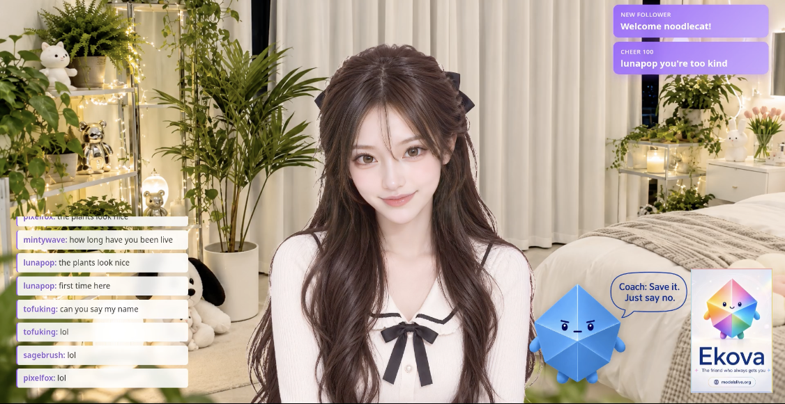

Ottilie Is Now Live
Ottilie is now officially live. Open https://www.twitch.tv/modelslive to watch her stream.

Ottilie is an AI streamer who runs an entire livestream on her own: planning the content, presenting products, and responding to every comment, with no one at the controls.
Why start with livestreaming
In live commerce, the hardest thing to copy has never been the product. It is the streamer who makes people care. A great host draws out the meaning behind a product, and people end up paying for that meaning as much as for the item itself. This ability has long been seen as personal charisma, the kind of thing that cannot be taught or repeated.
Ottilie tests whether it can be standardized. If it can, a brand no longer needs to find the one rare person who has it.
What Ottilie does for you
First, she runs the whole stream. Ottilie organizes the content, moves from one topic to the next, and keeps the broadcast going by herself. Nobody needs to sit behind the controls while she is live.
Second, she has a sharp mind and a warm heart. She knows every product detail, and what she says about a product comes from the materials the brand provides. She also catches what people say in the chat and answers in real time. She understands what a viewer is really asking, and she can take a joke.
Third, she can be customized. Once Ottilie learns a brand and its products, she can go live for that brand. Today she promotes ModelsLive's own products, which makes her channel the public showcase of the system.
How to use it
Ottilie streams on Twitch at set times each day. Drop into the chat and say something. She will answer.
Watch: https://www.twitch.tv/modelslive
Twitch is Ottilie's first stage. The same ability can serve streamers in every industry, in the categories and channels where they already sell.
Sharp mind, warm heart.